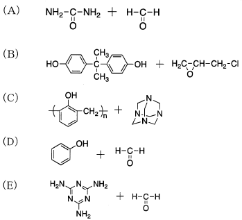

令和5年度 問20 高分子化学
（A）～（E）に示す付加縮合反応により生成する樹脂について、次の記述のうち適切なものはどれか。

①
Aの反応からウレタン樹脂が生成する。
②
Bの反応からフェノール樹脂が生成する。
③
Cの反応からメラミン樹脂が生成する。
④
Dの反応（酸性条件下）からノボラック樹脂が生成する。
⑤
Eの反応からウレア樹脂が生成する。
正答
④ Dの反応（酸性条件下）からノボラック樹脂が生成する。
付加縮合は付加反応と縮合反応の繰り返しで起こる重合です。
BはビスフェノールAとエピクロロヒドリンが共重合することでエポキシ樹脂が生成します。
Aは尿素とホルムアルデヒドが付加縮合することでウレア構造（-NH-CO-NH-）を持つウレア樹脂が生成します。問いにあるウレタン樹脂はウレタン結合（-NH-CO-O-）を形成する樹脂であり異なります。
Eはメラミンとホルムアルデヒドが付加縮合することでメラミン樹脂が生成します。
C、Dはフェノールとホルムアルデヒドが付加縮合することで得られるフェノール樹脂に関する問です。フェノール樹脂を合成する際、触媒として酸と塩基を用いた場合で異なる中間体を経てフェノール樹脂が得られます。
塩基を用いた場合、縮合反応よりも付加反応が優先して起こり中間体としてレゾールが得られます。レゾールはメチロール基（-CH2OH）が2～3個付加したフェノールです。加熱することで脱水縮合できます。周囲のベンゼン環同士で網目構造を形成しています。
対して酸を用いた場合、付加反応よりも縮合反応が優先して起こり中間体としてノボラックが得られます。ノボラックはフェノール多量体（2～8 量体）であり、直鎖構造を持ちます。直鎖構造を持つノボラックからフェノール樹脂を生成するには、硬化剤（網目構造を形成する役目）としてヘキサメチレンテトラミンを加えて加熱することで得られます。この一連の反応がCとDに該当します。